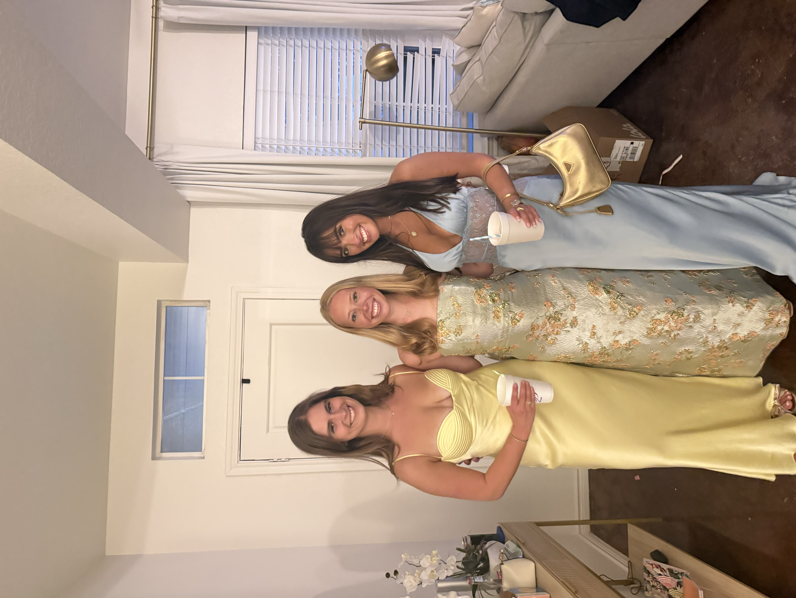

How Emotional Vulnerability is Strategically Edited in Reality Television
Research Question:
How is emotional vulnerability strategically performed or edited in reality television to increase audience engagement and monetization?

Academic foundation exploring how reality TV is constructed and why vulnerability drives engagement
Read Review →Comparative cross-show approach combining clip coding, platform metrics, and episode-level trends
View Methods →Detailed case studies and data showing how editing amplifies vulnerability across franchises
See Findings →How this research answers the question and what it means for media literacy
Read Conclusion →